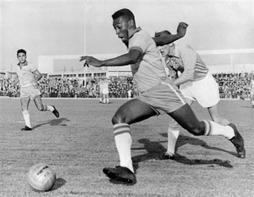
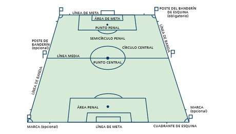
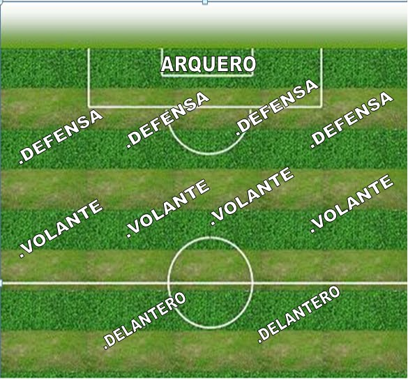

El fútbol (del inglés británico football, traducido como balompié) es un deporte de equipo jugado entre dos conjuntos de once jugadores cada uno y algunos árbitros que se ocupan de que las normas se cumplan correctamente. Es ampliamente considerado el deporte más popular del mundo, pues lo practican unas 270 millones de personas. También se le conoce como futbol asociación o fútbol asociación, nombre derivado de The Football Association, primera federación oficial del mundo en este deporte y que utilizó ese nombre para distinguirlo de otros deportes que incluyen la palabra "futbol" o "fútbol".5 En algunos países de habla inglesa también se le conoce como soccer, abreviatura de association, puesto que el nombre de football en esos países se asocia mayoritariamente a otros deportes con esa denominación (principalmente en Estados Unidos donde el nombre football aplica para el fútbol americano, un deporte totalmente distinto).
Historia

La humanidad ha realizado a lo largo de su historia diversos juegos de pelota, desde la Antigüedad. Se conoce que este entretenimiento existía tanto en la cultura del Mar Mediterráneo como en América.15 El hallazgo más antiguo y revelador se remonta a un relieve de la Antigua Grecia (400 a. C.), donde un hombre domina una pelota sobre su muslo. Este deporte era el episkyros,1617 que se jugaba con una pelota de cuero pintada con colores brillantes y dos equipos de 12 a 14 jugadores. La FIFA lo reconoció como una de las formas más antiguas del actual fútbol.18 Más tarde, en Roma, el mismo recibió el nombre de harpastum.
En Europa, ya a finales de la Edad Media y siglos posteriores, se desarrollaron en las islas británicas y zonas aledañas distintos juegos de equipo, a los cuales se los conocía como códigos de fútbol. Estos códigos se fueron unificando con el paso del tiempo, pero fue en la segunda mitad del siglo XVII cuando se dieron las primeras grandes unificaciones del fútbol, que más tarde dieron origen al fútbol de rugby, al fútbol americano, al fútbol australiano y al deporte que hoy se conoce en gran parte del mundo como fútbol a secas.La historia del fútbol se considera a partir de 1863, año de fundación de The Football Association, aunque en sus orígenes, al igual que los demás códigos de fútbol, se remontan varios siglos en el pasado, particularmente en las islas británicas durante la Edad Media.Si bien existían puntos en común entre diferentes juegos de pelota que se desarrollaron desde el siglo III a. C.2
Los primeros códigos británicos que dieron origen al fútbol se caracterizaban por su poca organización y violencia extrema.3 No obstante, también existían otros códigos menos violentos y mejor organizados. Quizás uno de los más conocidos fue el calcio florentino, deporte de equipo muy popular en Italia que tuvo incidencia en los códigos de algunas escuelas británicas.La formación definitiva del fútbol tuvo su momento culminante durante el siglo XIX(19).
Saque lateral: Una vez que el balón haya traspasado una línea lateral, se deberá proceder a tomar el balón con la mano para volver a ponerlo en juego.
Saque de meta: Una vez que el balón haya traspasado la línea frontal, habiendo sido tocada por última vez por un equipo en campo de juego rival, el arquero rival deberá poner el esférico en juego desde su arco.
Tiro de esquina: Una vez que el balón haya traspasado la línea frontal y haya sido tocado por última vez por un equipo en campo propio, se le concederá al rival reanudar el juego con un saque del balón desde el vértice correspondiente.
Tarjeta amarilla: Quedará a criterio del árbitro sancionar a un jugador con tarjeta amarilla al cometer un infracción un jugador.
Tarjeta roja: Un jugador verá la tarjeta roja al recibir dos tarjetas amarillas y deberá abandonar el campo de juego de inmediato. También se puede sancionar con tarjeta roja directa.
El campo de juego

El terreno de juego para practicar fútbol profesional deberá reunir ciertas condiciones establecidas por la autoridad deportiva conocida como FIFA (Federación Internacional de Fútbol Asociación). Estas condiciones son:
Tendrá que incluir césped natural o artificial de forma rectangular.
Medida establecidas de largo. mínimo 90 metros, máximo 120 metros.
Medidas establecidas de ancho. mínimo 45 metros, máximo 90 metros.
Los arcos deberán medir hasta 2,44 metros, con 7,32 metros de separación entre un palo lateral y el otro.
Posicion táctica de los jugadores

Guardameta, arquero o portero:
El guardameta, también conocido como portero, arquero o golero, es el jugador cuyo principal objetivo es evitar que la pelota entre a su meta durante el juego, acto conocido como gol. El guardameta es el único jugador que puede tocar la pelota con las manos durante el juego activo, aunque sólo dentro de su propia área. Cada equipo debe presentar un único guardameta en su alineación. En caso de que el jugador deba abandonar el terreno de juego por cualquier motivo, deberá ser sustituido por otro futbolista, ya sea uno que se encuentre jugando o un sustituto. Este tipo de jugadores deben llevar una vestimenta diferente a la de sus compañeros, sus rivales (incluido el guardameta) y el cuerpo arbitral. Por lo general suelen llevar el número 1 estampado sobre la camiseta.
Defensa:
El defensa, también conocido como defensor, es el jugador ubicado una línea delante del guardameta y una por detrás de los centrocampistas,cuyo principal objetivo es detener los ataques del equipo rival. Generalmente esta línea de jugadores se encuentra en formaarqueada, quedando algunos defensas más cerca del guardameta que los demás. Si es sólo un jugador el ubicado más atrás, recibe el nombre de líbero; si son dos o más, reciben el nombre de zagueros. Los defensores posicionados en los costados del terreno son llamados laterales o stoppers (en el caso de que haya un libero), y debido a su colocación (más cerca de los centrocampistas) estos pueden avanzar más en el terreno si lo desean. Para nombrarlos se agrega la zona a la palabra defensa: por ejemplo, un defensa que juega por la derecha(mirando hacia la meta rival) sería un lateral derecho. También el arquero debe proteger y dar instrucciones a los defensas.
Centrocampista:
El centrocampista, mediocampista o volante es la persona que juega en el mediocampo en un campo de fútbol. Entre sus funciones se encuentran las de recuperar balones, propiciar la creación de jugadas y explotar el juego ofensivo. De acuerdo a estas funciones podemos distinguir: los volantes carrileros (los que juegan más cerca de la línea de banda); los de contención, que juegan casi a la misma altura que los defensores laterales para contribuir a la defensa y pueden ser uno o dos jugadores (el apodo de "Cinco" que se da a estos jugadores se debe a que es el número que suelen llevar en la camiseta); y los de creación o enganches, que se sitúan entre la línea de los carrileros y delanteros (son el cerebro del ataque y se caracterizan por su habilidad).
Delantero:
Un delantero o atacante es un jugador de un equipo de fútbol que se destaca en la posición de ataque, la más cercana a la portería del equipo rival, y es por ello el principal responsable de marcar los goles. Es muy importante estar en movimiento y buscar siempre pase, es decir, desmarcarse para que le sea más fácil al que lleva la pelota pasársela. La velocidad es esencial.
Aqui te dejamos un video sobre como se invento el fútbol:
Contactenos
Nombre:
Numero telefónico:
Correo:
Sexo:
Hombre
Mujer